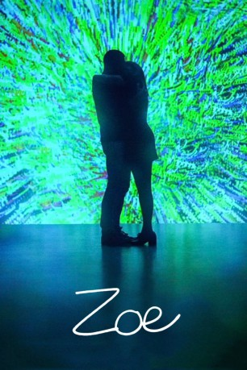
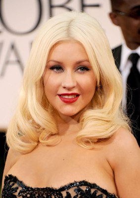

#9896 Zoe
 
 IMDB-Wertung: 6.1 / 10
IMDB-Wertung: 6.1 / 10  Tomatometer: 32
Tomatometer: 32  Metascore: 39
Metascore: 39 
Cole und Zoe arbeiten daran romantische Beziehungen mithilfe von Computersystemen zu perfektionieren. Ihr Ziel ist es den Menschen lebenslange Partnerschaften ohne jegliches Leid zu ermöglichen. Hierfür übernimmt Cole ein neues Projekt: Synthetische Gefährten, denen es möglich ist menschliche Emotionen nachzuempfinden und zu verstehen. Er entwickelt Ash, einen Androiden, der eifersüchtig auf die Affäre zwischen Zoe und Cole wird und versucht die beiden Liebenden auseinanderzubringen. Als Resultat geraten alle Beteiligten in einen Abwärtssog aus Erotik, Konfusion, Drogen und Liebe, in der die Grenzen zwischen synthetischen und realen Gefühlen immer mehr verschwimmen.
Jahr: 2018
Dauer: 104 Minuten
FSK:
Land: USA Studio: GEM EntertainmentTonspuren: DTS - ,
Untertitel: Deutsch,
Auflösung: 1080p (1920x808) Größe: 4874 MB
Genre: Sci-Fi, Liebe
Regisseur: Drake Doremus
Drehbuch: Richard Greenberg, Richard Greenberg, Drake Doremus
Soundtrack: Dan Romer
Darsteller:
 Ewan McGregor als Cole
Ewan McGregor als Cole Léa Seydoux als Zoe
Léa Seydoux als Zoe Theo James als Ash
Theo James als Ash Rashida Jones als Emma
Rashida Jones als Emma-  Christina Aguilera als Jewels
 Miranda Otto als The Designer
Miranda Otto als The Designer- Anthony Shim als Hideo
 Matthew Gray Gubler als Skinny Guy
Matthew Gray Gubler als Skinny Guy- Richard Brimblecombe als Interviewer
- Arlen Aguayo-Stewart als Woman on Lab Tour
 Kai Lennox als Nick
Kai Lennox als Nick- Helen Johns als Muriel Théroux
- Vincent D'Arbouze als Middle Aged Guy
 Kyle Gatehouse als Average Guy
Kyle Gatehouse als Average Guy- Jordana Lajoie als Other Robot
- Daniel Chichagov als Lab Tech #1
- Chris Sandiford als Lab Tech #2
- Nora Guerch als Host
- Frank Marrs als Robot
- Stephanie Ng Wan als Woman in Promotional Video
- Adam Bernett als Man In Promotional Video
- Letitia Brookes als Woman in Promotional Video #2
 Tristan D. Lalla als Man in Promotional Video #2
Tristan D. Lalla als Man in Promotional Video #2- Sarah Levesque als Uncomfortable Woman
- Andrea Susan Bush als Robot (uncredited)
- Jennifer-Lynn Christie als Lab Customer (uncredited)
- Donovan Colan als Caleb
- Janine Theriault als Isla
- Walter Lyng als Quiz Master
- Patrick Abellard als Synthetic Man
- Stephen Spreekmeester als Driver
- David Noël als Lab Tech #3
- Francesca Barcenas als Receptionist
- Alexandre Daigle als Man #1
- Patrick Baby als Man #2
- Eddy Philantrope als Man #3
- Ellis Arch als Rep
- Al Connors als Handsome Dweeb
- Alex Kaluza als Man on Lab Tour
- Guang Xu Jason Xiang als Dancing Man
- Xiaoli Ruan als Dancing Woman
- Béatrice Aubry als Pianist Bot
- Ava Brackers als Edgy Woman
- Franco Decrescentis als Twitchy Guy
- Jimmy Chantal als Security Guy
- Sophie Emma Rose als Synthetic #1
- Nichole Bird als Synthetic #2
- Jack Thorpe als Synthetic #3
- Ediz Ibrahim als Synthetic #4
- Noémie Leduc-Vaudry als Woman #3
Datei: X:\2018(N-Z)\Zoe (2018, FSK, 1920x808).mkv seit 08.11.2018
Festplatte: HD 2018(G-Z)-2019(A-Z)
 Es gibt insgesamt 172 Filme in der Gruppe '2018(N-Z)'
Es gibt insgesamt 172 Filme in der Gruppe '2018(N-Z)'